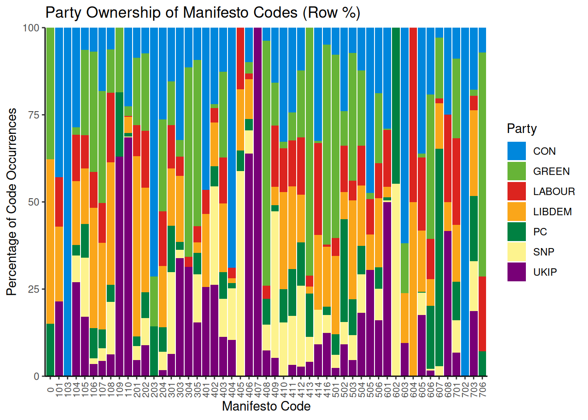
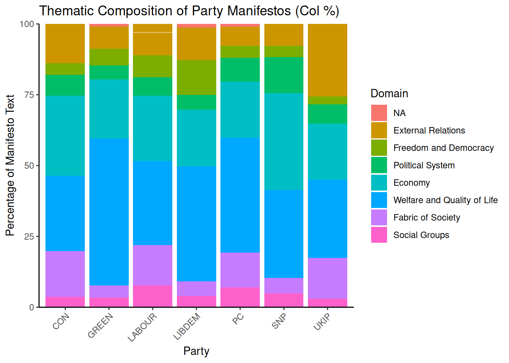
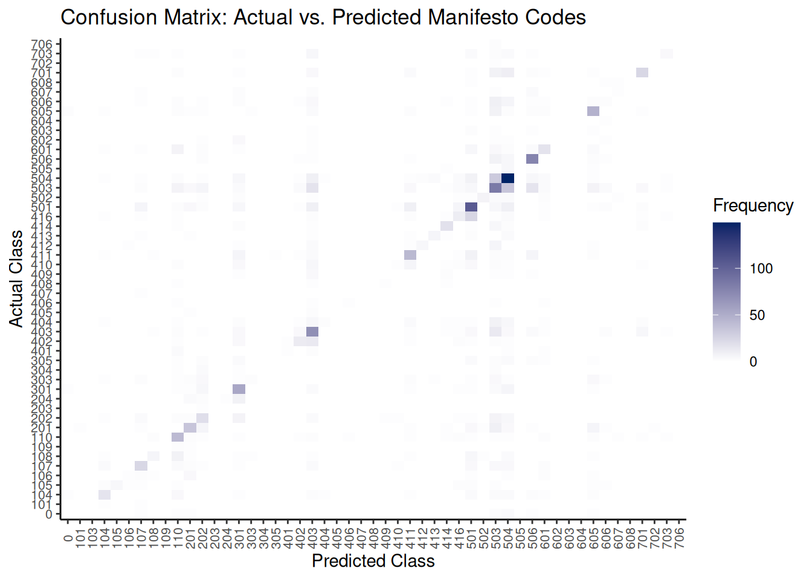
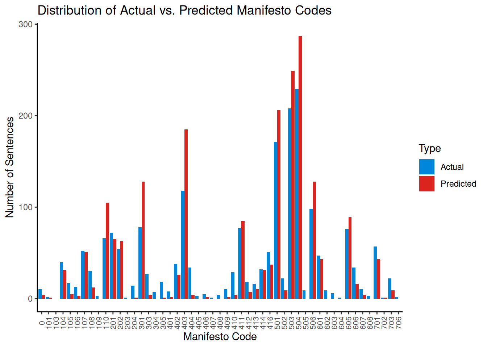

7.3 Naive Bayes (NB)
As with SVM, Naive Bayes is a simple yet efficient text classification model. It belongs to a family of probabilistic classifiers based on applying Bayes’ Theorem with a “naive” that every word in a document is conditionally independent of every other word given the class. The classifier calculates this value for each class and assigns the document to the class with the highest resulting probability. Despite its simplifying assumption, Naive Bayes performs remarkably well for many text classification tasks, such as spam detection and document categorization.
For this example, we will use data from the Manifesto Project (also known as the Comparative Manifesto Project (CMP)). To use this data, ensure you have signed up, downloaded the API key, loaded the package, and set the key.
library(manifestoR) # Used to download Manifesto Project data
library(quanteda) # For text analysis and DFM creation
library(quanteda.textmodels) # For the Naive Bayes model
library(ggplot2) # For plotting
library(DescTools) # For Krippendorf's Alpha
library(caret) # For confusion matrix and classification metrics
library(dplyr) # For data manipulation
# Set your Manifesto Project API key Replace 'manifesto_apikey.txt' with the
# path to your API key file
mp_setapikey("manifesto_apikey.txt")As the entire MP corpus is relatively large, here we will only focus on part of it: the manifestos for the 2015 United Kingdom general election. To achieve this, we have created a data frame listing the party and year for the ‘mp_corpus’ command. Please note that The Manifesto Project uses unique codes for each party, which can be found in its codebook.
# Party codes: CON(51620), LABOUR(51320), LIBDEM(51421), SNP(51901), PLAID
# CYMRU(51902), GREEN(51110), UKIP(51951)
manifestos_info <- data.frame(party = c(51320, 51620, 51110, 51421, 51901, 51902,
51951), date = rep(201505, 7))
# Download the specified manifestos as a manifestoR corpus
manifesto_corpus <- mp_corpus(manifestos_info)## Connecting to Manifesto Project DB API... corpus version: 2024-1
## Connecting to Manifesto Project DB API... corpus version: 2024-1We will create a data frame containing the quasi-sentences (the unit of analysis), their assigned cmp_code, and the party they belong to. This process extracts the core data needed for our analysis.
# Programmatically create a list of data frames, one for each document
corpus_list <- lapply(manifesto_corpus, function(doc) {
data.frame(texts = content(doc), cmp_code = codes(doc), party = doc$meta$party,
stringsAsFactors = FALSE)
})
# Combine the list of data frames into a single data frame
manifesto_data <- do.call(rbind, corpus_list)Next, we clean and transform the data. We convert the party codes to factor labels (e.g., “CON”, “LABOUR”) for clarity, ensure text and code columns are in the correct format, and remove entries with NA codes, which typically correspond to un-coded document headers and titles.
# Transform and clean the data frame
manifesto_data$party <- factor(manifesto_data$party, levels = c(51110, 51320, 51421,
51620, 51901, 51902, 51951), labels = c("GREEN", "LABOUR", "LIBDEM", "CON", "PC",
"SNP", "UKIP"))
manifesto_data$party <- as.character(manifesto_data$party)
manifesto_data$texts <- as.character(manifesto_data$texts)
manifesto_data$cmp_code <- as.numeric(as.character(manifesto_data$cmp_code))
# Remove NA values (sentences without a code)
manifesto_data <- na.omit(manifesto_data)
# Display the structure of the cleaned data
str(manifesto_data)## 'data.frame': 9763 obs. of 3 variables:
## $ texts : chr "Our manifesto begins with the Budget Responsibility Lock we offer the British people." "It is the basis for all our plans in this manifesto because it is by securing our national finances that we are"| __truncated__ "Every policy in this manifesto is paid for." "Not one commitment requires additional borrowing." ...
## $ cmp_code: num 414 414 414 414 414 414 414 414 414 414 ...
## $ party : chr "LABOUR" "LABOUR" "LABOUR" "LABOUR" ...
## - attr(*, "na.action")= 'omit' Named int [1:1014] 1 2 3 4 5 6 9 19 20 21 ...
## ..- attr(*, "names")= chr [1:1014] "51320_201505.1" "51320_201505.2" "51320_201505.3" "51320_201505.4" ...We can calculate row percentages to understand how much a party “owns” a specific code. This shows the proportion of a code’s total appearances attributed to each party.
# Calculate row percentages of code occurrences by party
prop_row <- as.data.frame(prop.table(table(manifesto_data$cmp_code, manifesto_data$party),
margin = 1) * 100)
names(prop_row) <- c("Code", "Party", "Percentage")
# Display head of row percentages
head(prop_row)## Code Party Percentage
## 1 0 CON 0.000000
## 2 101 CON 42.857143
## 3 103 CON 100.000000
## 4 104 CON 28.632479
## 5 105 CON 6.382979
## 6 106 CON 6.896552Visualizing the prop_row object as a stacked bar chart clarifies how parties utilize different codes.
# Define party colours for consistent plotting
party_colors <- c(CON = "#0087DC", GREEN = "#67B437", LABOUR = "#DC241F", LIBDEM = "#FAA61A",
PC = "#008142", SNP = "#FDF38E", UKIP = "#780077")
# Plot the row percentages
ggplot(data = prop_row, aes(x = factor(Code), y = Percentage, fill = Party)) + scale_fill_manual(values = party_colors) +
geom_bar(stat = "identity", position = "stack") + scale_y_continuous(expand = c(0,
0)) + theme_classic() + theme(axis.text.x = element_text(angle = 90, vjust = 0.5,
size = 8)) + labs(x = "Manifesto Code", y = "Percentage of Code Occurrences",
title = "Party Ownership of Manifesto Codes (Row %)")
This chart shows that some parties dominate specific categories. For example, we can see that UKIP is the only one to use code 406 (Protectionism: Positive). Note that these are percentages; a high percentage might reflect dominance but could be based on a very small number of sentences. Other categories are more evenly distributed across parties. We can also analyze the thematic composition of each party’s manifesto by calculating column percentages:
# Calculate column percentages (percentage of party manifesto per code)
prop_col <- as.data.frame(prop.table(table(manifesto_data$cmp_code, manifesto_data$party),
margin = 2) * 100)
names(prop_col) <- c("Code", "Party", "Percentage")
# Display head of column percentages
head(prop_col)## Code Party Percentage
## 1 0 CON 0.0000000
## 2 101 CON 0.3778338
## 3 103 CON 0.1259446
## 4 104 CON 4.2191436
## 5 105 CON 0.3778338
## 6 106 CON 0.2518892With 57 possible codes, grouping them into the 7 thematic domains defined by the Manifesto Project is more practical. We create a new Domain variable and assign each code to its corresponding domain.
# Assign codes to their respective domains
prop_col$Code <- as.numeric(as.character(prop_col$Code))
prop_col$Domain <- cut(prop_col$Code, breaks = c(-1, 0, 110, 204, 305, 416, 507,
608, 706), labels = c("NA", "External Relations", "Freedom and Democracy", "Political System",
"Economy", "Welfare and Quality of Life", "Fabric of Society", "Social Groups"))
# Display head with Domain information
head(prop_col)## Code Party Percentage Domain
## 1 0 CON 0.0000000 NA
## 2 101 CON 0.3778338 External Relations
## 3 103 CON 0.1259446 External Relations
## 4 104 CON 4.2191436 External Relations
## 5 105 CON 0.3778338 External Relations
## 6 106 CON 0.2518892 External RelationsWe can now plot the distribution of these domains within each party’s manifesto.
# Plot the column percentages aggregated by domain
ggplot(data = prop_col, aes(x = Party, y = Percentage, fill = Domain)) + geom_bar(stat = "identity",
position = "stack") + scale_y_continuous(expand = c(0, 0)) + theme_classic() +
labs(x = "Party", y = "Percentage of Manifesto Text", title = "Thematic Composition of Party Manifestos (Col %)") +
theme(axis.text.x = element_text(angle = 45, hjust = 1))
The plot shows that “Welfare and Quality of Life” and “Economy” are dominant themes across most parties. We can also see party-specific focuses, such as UKIP’s emphasis on “External Relations”.
Now, let us turn to the Naive Bayes. First, she place our data into a corpus object:
## Corpus consisting of 9763 documents, showing 10 documents:
##
## Text Types Tokens Sentences cmp_code party
## 51320_201505.7 13 14 1 414 LABOUR
## 51320_201505.8 29 35 1 414 LABOUR
## 51320_201505.10 9 9 1 414 LABOUR
## 51320_201505.11 7 7 1 414 LABOUR
## 51320_201505.12 17 17 1 414 LABOUR
## 51320_201505.13 21 22 1 414 LABOUR
## 51320_201505.14 10 10 1 414 LABOUR
## 51320_201505.15 18 20 1 414 LABOUR
## 51320_201505.16 26 30 1 414 LABOUR
## 51320_201505.17 20 22 1 414 LABOURTo train and evaluate our model, we must split the data into training and test sets. We’ll use 80% for training and 20% for testing. set.seed ensures that the random sampling is reproducible.
set.seed(42)
# Generate a random sample of document indices for the training set
id_train <- sample(1:ndoc(manifesto_corpus), size = ndoc(manifesto_corpus) * 0.8,
replace = FALSE)
# Create training and test sets by subsetting the corpus
train_corpus <- corpus_subset(manifesto_corpus, 1:ndoc(manifesto_corpus) %in% id_train)
test_corpus <- corpus_subset(manifesto_corpus, !1:ndoc(manifesto_corpus) %in% id_train)Next, we create Document-Feature Matrices (DFMs) from our corpus subsets. A DFM is a table where rows represent documents, columns represent words (features), and cells contain word counts. We perform basic text cleaning during this step: removing punctuation, numbers, and symbols. We also trim the DFM to remove very infrequent terms, which helps reduce noise and improve model performance.
# Create DFM for the training set
train_dfm <- train_corpus %>%
tokens(remove_punct = TRUE, remove_numbers = TRUE, remove_symbols = TRUE) %>%
dfm() %>%
dfm_trim(min_termfreq = 5)
# Create DFM for the test set We don't trim the test set yet, as we will match
# its features to the training set
test_dfm <- test_corpus %>%
tokens(remove_punct = TRUE, remove_numbers = TRUE, remove_symbols = TRUE) %>%
dfm()We train the Naive Bayes model using the training DFM and the cmp_code variable as the target label.
manifesto_nb <- textmodel_nb(train_dfm, y = docvars(train_corpus, "cmp_code"))
summary(manifesto_nb)The model summary provides estimated feature scores (the probability of a word given a class). We aim to evaluate the model’s performance on unseen data from the test set. Keep in mind that the Naive Bayes model can only make predictions based on features it has seen during training. Therefore, we must align the feature set of the test DFM with the training DFM. The dfm_match() function ensures that the test DFM has the same features as the training DFM.
The number of features in the matched test DFM is now identical to the training DFM. We can now predict the classes for the test set.
# Predict the classes for the matched test set
predicted_class <- predict(manifesto_nb, newdata = matched_test_dfm)
# Get the actual classes from the test corpus's document variables
actual_class <- docvars(test_corpus, "cmp_code")
# Create a confusion matrix (table of actual vs. predicted classes)
table_class <- table(Actual = actual_class, Predicted = predicted_class)
# Display a subset of the confusion matrix due to its large size
table_class[1:10, 1:10]## Predicted
## Actual 0 101 103 104 105 106 107 108 109 110
## 0 0 0 0 0 0 0 1 0 0 1
## 101 0 0 0 1 0 0 1 0 0 0
## 104 1 0 0 16 0 0 0 0 0 4
## 105 0 0 0 2 5 1 1 0 0 1
## 106 0 0 0 0 0 1 2 1 0 0
## 107 0 0 0 3 0 0 24 0 0 3
## 108 0 0 0 1 0 0 0 6 0 8
## 109 0 0 0 0 0 0 0 0 0 2
## 110 0 0 0 0 0 0 0 2 0 42
## 201 0 1 0 0 0 0 1 0 0 0A confusion matrix table can be large and difficult to interpret. A heatmap offers a more intuitive visualization, highlighting where the model is accurate (strong diagonal) and where it makes errors (dark cells off the diagonal).
# Convert the table to a data frame for plotting
table_class_df <- as.data.frame(table_class)
names(table_class_df) <- c("Actual", "Predicted", "Frequency")
# Plot the confusion matrix as a heatmap
ggplot(data = table_class_df, aes(x = Predicted, y = Actual)) + geom_tile(aes(fill = Frequency)) +
scale_fill_gradient(low = "white", high = "#002366", name = "Frequency") + labs(x = "Predicted Class",
y = "Actual Class", title = "Confusion Matrix: Actual vs. Predicted Manifesto Codes") +
theme_classic() + theme(axis.text.x = element_text(angle = 90, vjust = 0.5, size = 8),
axis.text.y = element_text(size = 8))
To further understand how well NB has done, we can calculate aggregate performance metrics like accuracy, precision, recall, and F1-score. The caret package’s confusionMatrix function is ideal.
# Ensure levels are consistent for the confusion matrix function
all_levels <- unique(c(as.character(actual_class), as.character(predicted_class)))
actual_class_factor <- factor(actual_class, levels = all_levels)
predicted_class_factor <- factor(predicted_class, levels = all_levels)
# Calculate various classification metrics using caret::confusionMatrix
classification_metrics <- confusionMatrix(predicted_class_factor, actual_class_factor)
# Display macro-averaged F1-score (calculated manually from per-class stats)
macro_f1 <- mean(classification_metrics$byClass[, "F1"], na.rm = TRUE)
cat("Macro-Averaged F1-Score:", macro_f1, "\n")## Macro-Averaged F1-Score: 0.3686071In addition to this, comparing the frequency distribution of predicted classes against the actual classes can reveal if the model is biased towards or against specific categories.
# Create data frames for actual and predicted class counts and combine them
actual_counts_df <- as.data.frame(table(actual_class), stringsAsFactors = FALSE) %>%
rename(Code = actual_class, Frequency = Freq) %>%
mutate(Type = "Actual")
predicted_counts_df <- as.data.frame(table(predicted_class), stringsAsFactors = FALSE) %>%
rename(Code = predicted_class, Frequency = Freq) %>%
mutate(Type = "Predicted")
class_distribution_df <- bind_rows(actual_counts_df, predicted_counts_df)
# Plot the distribution
ggplot(class_distribution_df, aes(x = Code, y = Frequency, fill = Type)) + geom_bar(stat = "identity",
position = "dodge") + theme_classic() + labs(x = "Manifesto Code", y = "Number of Sentences",
title = "Distribution of Actual vs. Predicted Manifesto Codes") + scale_fill_manual(values = c(Actual = "#0087DC",
Predicted = "#DC241F")) + theme(axis.text.x = element_text(angle = 90, vjust = 0.5,
size = 8))
This plot helps visualize if the model over-predicts (red bar is taller) or under-predicts (blue bar is taller) specific codes compared to their true frequency in the test set.
Finally, we can use Krippendorff’s \(\alpha\) again to measure the agreement between the model’s predictions and the human-assigned codes, accounting for chance agreement.
reliability_data <- as.matrix(rbind(as.character(actual_class), as.character(predicted_class)))
# Calculate for nominal data
kripp_alpha <- KrippAlpha(reliability_data, method = "nominal")
kripp_alpha$value## [1] 0.420661Interpreting the \(\alpha\) value requires context. Research by Mikhaylov et al. (2012) estimates the agreement among trained human coders for the Manifesto Project to be between 0.350 and 0.400. Seen this way, our \(\alpha = 0.43\) from our simple automated model is therefore quite good!